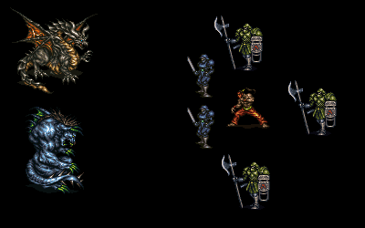
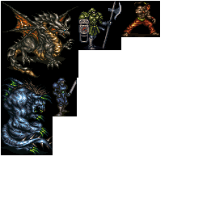
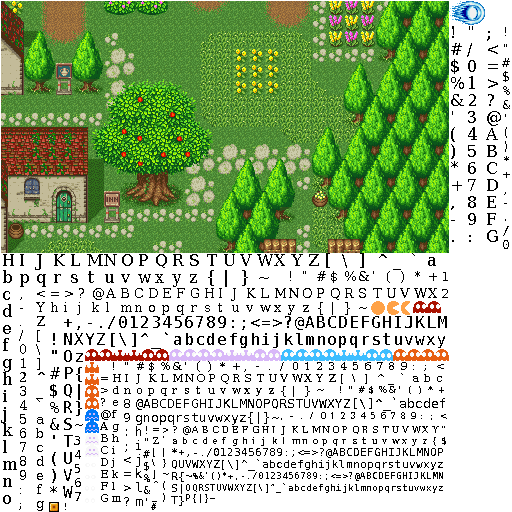

2013-05-06: Creating Texture Atlases in Racket
The source for this post is online at 2013-05-06-texture-atlas.rkt.
A texture is a silly graphics word for an image that adds color or texture to a 3D model. For our purposes, it means the same thing as image.
A texture atlas is a single image with many smaller images inside of it, along with an index of where the sub-images appear in the large image. Historically, these are also called tile sets and sprite sheets, but those terms imply certain graphical styles.
This post discusses why texture atlases are useful and how to generate them, using Racket.
-
1 Why texture atlases?
Every object in an OpenGL scene will typically have a texture applied to it, and every scene is likely to have many objects in it. This implies that a given scene will use many textures.
For example, this scene uses five textures:

Unfortunately, it is relatively expensive in OpenGL to change the current texture. (Sidebar: This is because changing the texture means binding it into some special GPU memory, which may require a CPU to GPU memory transfer if it isn’t already loaded. It is true that you can a few "current" textures, but the number is small enough that it isn’t useful for rendering a lot of objects.)
If we were to program the rendering in the most obvious way:
(define (render-scene objects) (for ([o (in-list objects)]) (opengl:set-current-texture! (object-texture o)) (render-object-geometry o)))
Then the render would run very slow. In an example that I wrote, this ran at about 15 frames-per-second. (If you aren’t in the know: you want 60 FPS.)
(Sidebar: You may find opengl:set-current-texture! distasteful, but there’s little you can do about it at the low-level: OpenGL is an extremely stateful system where small functions that do little amounts of drawing work depend a huge number of imperatively modified and globally set variables. It has a parameterize-like stack to record and unroll these changes, but it is still necessary to understand the role all these global variables.)
Instead it can be useful to combine all the textures into a single mega-texture (not to be confused with a MegaTexture):

Then, you can write code like:
(define (render-scene objects) (opengl:set-current-texture! the-texture-atlas) (for ([o (in-list objects)]) (opengl:set-texture-offsets! (texture-atlas-lookup the-texture-atlas (object-texture o))) (render-object-geometry o)))
This code sets the texture a single time for OpenGL and at each object’s rendering stage, just updates a few floats that are used in some of the computations. This is a lot faster, in my example the program ran at about 30 to 40 FPS.
Designing your renderer like this actually puts you on the path of being able to combine all your drawing into a single OpenGL call that runs a GPU program that interprets the data and uses the texture atlas behind the scenes:
(define (render-scene objects) (opengl:set-current-texture! the-texture-atlas) (opengl:draw (for/list ([o (in-list objects)]) (object-gpu-code/texture o))))
This is even faster. (My example now renders a single frame in about 1 millisecond, which is 16 times faster than is necessary for 60 FPS.)
But I won’t go into the drawing details any more.
2 How to generate texture atlases
Instead, we’ll focus on how to go from a big list of images into a single image. We could express the job of a texture atlas generator as:
It consumes all the images and produces two things. First, the actual atlas. Second, a mapping function from the original image to its location inside of the atlas.
The code that does the reading and writing of a directory of images, plus the recording of the lookup into a file, is pretty boring and straight-forward. It’s just 100 lines and a bit boring.
In this post, we’ll focus on the interesting algorithm that a texture atlas generator runs. But is it really interesting? Isn’t it obvious how to pack a lot of images: just line them up from end to end.
This atlas actually isn’t that bad, but it’s a side effect of using a small number of textures. I hope you see how the problem generalizes.
This is bad because of the unused space at the bottom because some textures are tall and others are short. Before trying to think of clever ways to solve this, we should see if there’s pre-existing work... and of course there is: this is the bin packing problem!
3 2D Bin Packing
Bin packing is an NP-complete problem wherein you must find the optimal layout strategy for a set objects, each with different dimensions and worth. (Actually, we’ve seen bin packing before because the knapsack problem from 2013-04-09: Branch and Bound in Racket is a special case.)
The problem description can be generalized to arbitrary dimensions, but for texture atlases, we only care about the 2D case. Moreover, we need to pack every image, so there is no need to reason about the value of different packings. Thus, we just want to fit all of the images in the big image, while minimizing the area. (The reason to minimize the area should be obvious: area equals graphics card memory, transfer speed, etc.)
The basic algorithm we’ll use is to start from the "all in a line" version and then repeatedly remove a pixel from the right and add a pixel on the bottom and try to fit the images again. This algorithm is from Richard E. Korf.
However, some of the realities on the OpenGL world are going to make this super trivial. First, most GPUs perform better with square textures, so we only need to consider square atlas sizes. Second, it is best if textures are sized in powers of two. This drastically reduces the search space of possible texture atlas sizes.
(Sidebar: Why is it best if textures are sized in powers of two? The easy answer is that many versions of OpenGL don’t support anything else, but that’s a cop-out because it doesn’t explain why that would be the case. The real reason is that texture coordinates inside of a texture are specified using a number from 0 to 1 and not a pixel number. Floating point operations where you divide by 2 repeatedly to go from a pixel to the 01-coordinate or multiplying by 2 to go back are more efficient and less lossy.)
These things will greatly inform our algorithm. However, most of our code is reusable if you want to get non-power-of-two-square image packing. Without further ado, let’s get into the code!
4 The packer
The first thing to think about is the interface. The output will be the length of a side of the atlas and a list of placements. A placement will be a simple structure that combines an X coordinate, Y coordinate, and the element. On the other side, it will take a list of opaque elements along with accessors that extract their width and height.
(struct placement (x y e) #:transparent) (define (pack e-w e-h l) <pack-body>) (provide (struct-out placement) (contract-out [pack (-> (-> any/c exact-positive-integer?) (-> any/c exact-positive-integer?) (listof any/c) (cons/c number? (listof placement?)))]))
The body of pack is fairly straight-forward: we decide what power of two to start with, then we order the elements to speed up the search, then we try atlas sizes until the first fits. (Since we try from the bottom, the first success is "optimal".)
It is also a little obvious where to start looking. If all your textures add up to 647 pixels in area, then you won’t be able to fit that into 16x16 atlas, because it only has 256 pixels, the smallest size that could work is 32x32. Thus, the starting power-of-two is five.
(define (e-area e) (* (e-w e) (e-h e))) (define total-area (apply + (map e-area l))) (define starting-pow2 (num->pow2 (sqrt total-area)))
A useful heuristic when bin packing is to place large objects first, because they create large areas of empty space around them, so we’ll just sort all the objects by their area and put the large ones first.
Next, we repeatedly try larger and larger sizes until one works. The core algorithm receives (a) the desired dimensions, (b) the object accessors, and (c) the objects and then returns the placements. We use a for/or so that the first non-#f result is returned and ensure that we always return #f on failure (which is impossible, by the way.)
(for/or ([try-pow2 (in-naturals starting-pow2)]) (define len (expt 2 try-pow2)) (printf "trying pow2 = ~a\n" try-pow2) (define p (place len len e-w e-h ordered-l)) (and p (cons len p)))
The core algorithm is based on the concept of a layout. A layout has a width and a height and is either totally empty, totally occupied by an element, or is divided into four quadrants.
(struct layout (w h) #:transparent) (struct space layout () #:transparent) (struct occupied layout (e) #:transparent) (struct quad layout (subs) #:transparent)
The algorithm starts with the entire space empty and repeatedly tries to insert objects until it fails (or runs out of objects.) This final layout then needs to be flatten to the individual objects.
(define (place w h e-w e-h l) (let/ec esc (layout->placements 0 0 (for/fold ([s (space w h)]) ([e (in-list l)]) (or (insert s e-w e-h e) (esc #f))))))
We use an escape continuation to jump out of the loop on the first failure and we rely on the flattener layout->placements, which traverses the object and keeps track of where it is in the overall structure.
(define (layout->placements x y ly) (match ly [(space _ _) empty] [(occupied _ _ e) (list (placement x y e))] [(quad _ _ (list ul ur ll lr)) (append (layout->placements (+ x 0) (+ y 0) ul) (layout->placements (+ x (layout-w ul)) (+ y 0) ur) (layout->placements (+ x 0) (+ y (layout-h ul)) ll) (layout->placements (+ x (layout-w ll)) (+ y (layout-h ur)) lr))]))
The insertion routine is fairly basic too. If the space is occupied, we fail. If it is free, and the object fits, then put it in the upper left and split the space. Otherwise, try to put it in each sub-space and use the first success.
(define (insert s e-w e-h e) (match s [(occupied _ _ _) #f] [(space w h) (define e_w (e-w e)) (define e_h (e-h e)) (and (<= e_w w) (<= e_h h) (quad w h (list (occupied e_w e_h e) (space (- w e_w) e_h) (space e_w (- h e_h)) (space (- w e_w) (- h e_h)))))] [(quad w h subs) (define new-subs (for/or ([inner (in-list subs)]) (define new-inner (insert inner e-w e-h e)) (and new-inner (replace subs inner new-inner)))) (and new-subs (quad w h new-subs))]))
This code is a little bit immoral because it treats the list of quadrants uniformly, but in fact each has a special meaning. Therefore, a better definition of quad would be (struct quad layout (ul ur ll lr)), but that would require ugly code duplication in insert. Similarly, we could be a little more efficient by ignoring the upper left, because we know we always put things in it when we create a split.
This code produces beautiful atlases like:

If you’d like to use this code at home, you should put it in this order:
(require racket/contract 2htdp/image racket/match racket/list) (let () (define opengl:draw void) (define opengl:set-current-texture! void) (define opengl:set-texture-offsets! void) (define object-texture void) (define object-gpu-code/texture void) (define render-object-geometry void) (define the-texture-atlas #f) (define texture-atlas-lookup #f) (let () <naive-render> (void)) (let () <atlas-render> (void)) (let () <gpu-render> (void))) <generator/c> (define (num->pow2 n) (inexact->exact (ceiling (/ (log n) (log 2))))) <layouts> (define (replace l from to) (cond [(empty? l) empty] [(eq? from (first l)) (cons to (rest l))] [else (cons (first l) (replace (rest l) from to))])) <insert> <flatten> <place> <interface> (define N 10) (define l (build-list N (λ (i) (cons (add1 (random 100)) (add1 (random 100)))))) (printf "~v\n" l) (pack car cdr l)
The production version is online here, and is a little different.
The example textures found in this post come from the following sources, which hold their copyright: Pac-Man (Namco, 1980), Tetris (The Tetris Company 1984), Secret of Mana (Square, 1993), Street Fighter II (Capcom 1991), and Final Fantasy VI (Square, 1994).